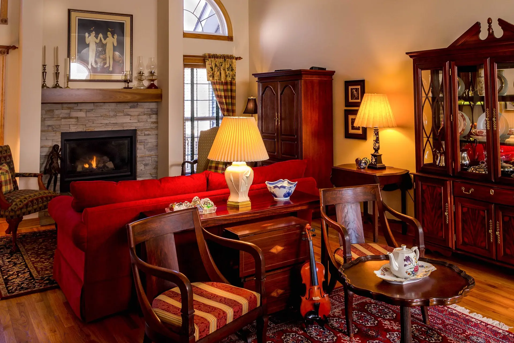
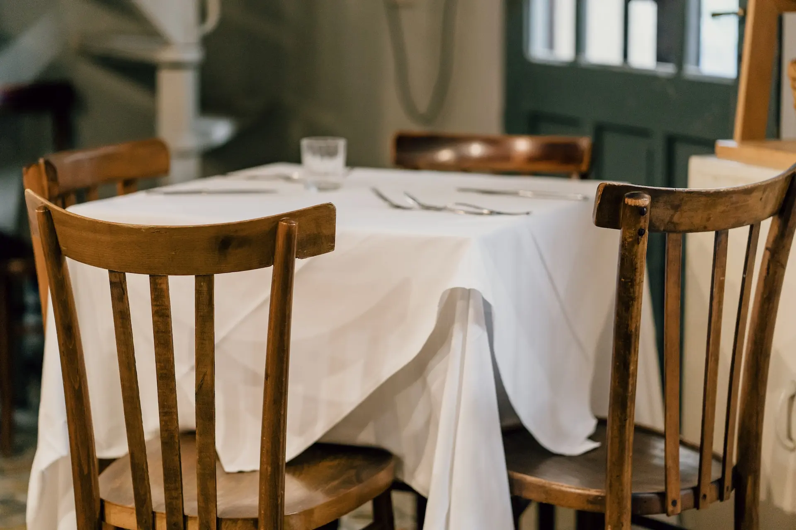
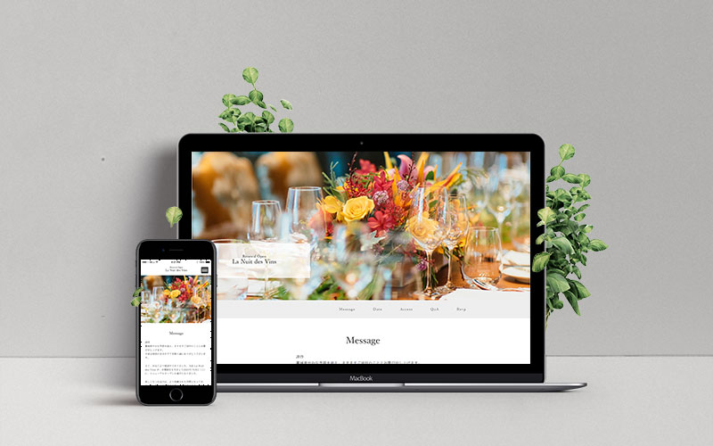
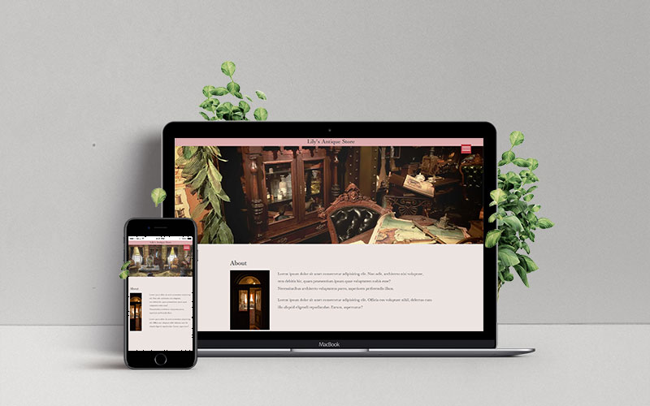
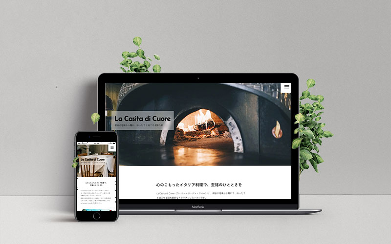
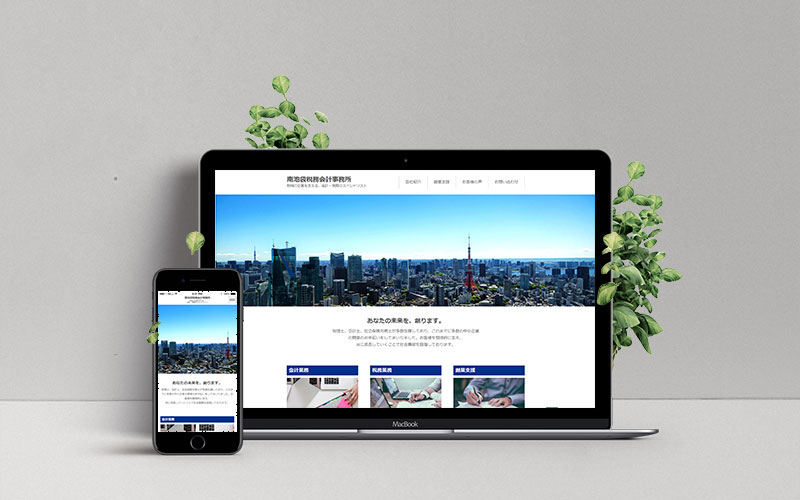
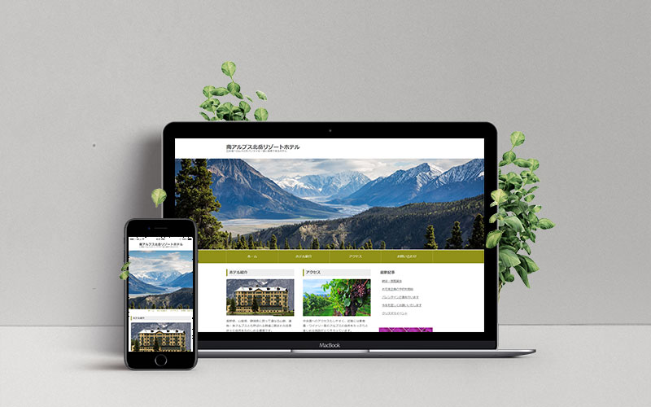

- 
- 
Profile

大野 奈歩（Oono Naho）
1991年5月17日生まれ
東京都大田区で産声を上げ、海辺の広島県三原市と、湖畔の滋賀県草津市で育ちました。
有形無形問わず、ものづくりが好きで、ゼロから創り出すことに喜びを感じています。幼少期はひたすら絵本作りや工作をし、14歳から25歳までは舞台女優や声優を目指して演劇漬けの日々を送りました。最近の趣味は、あんみつを食べることと一眼レフカメラで写真を撮ることです。
テーマパークでの接客、事務、広告制作進行など、様々な職種を経験してきました。
広告制作進行でweb案件を担当していた時に「作り方を知りたい、自分でも作れるようになれたらすごいかも」と思ったことから、
現在はweb制作の勉強をしています。
Coding
-

習作1（ La Nuit des Vins ）
【概要】レストラン内覧会への招待ページ設定のLPサイト
【言語】HTML、CSS、JavaScript、jQuerycrux
上品な雰囲気にすることを重視し、jQueryを使用して動きのあるページに仕上げました。
Google formとも連動させ、実際に集計をとることが可能です。 -

習作2（ Lily's Antique Store ）
【概要】アンティークショップのホームページ設定のLPサイト
【言語】HTML、CSS、JavaScript、jQuerycrux
店内にいる感覚を味わえるよう、多数の画像をgridやflexbox、JavaScriptの画像置換で配置しています。
お店に足を運んでみたいと思わせるページを目指しました。 -

習作3（ La Casita di Cuore ）
【概要】イタリアンレストランのホームページ設定のLPサイト
【言語】HTML、CSS、JavaScript、jQuery、Sasscrux
パララックスや動画など、見ていて楽しくなるような要素を入れました。
「都会の隠れ家」というコンセプトを表現するために、ポップかつ落ち着きのあるフォントや色を使用しています。 -

習作4（ 南池袋税務会計事務所 ）
【概要】税務会計事務所の公式サイト設定のトップページ
【言語】HTML、CSS、JavaScript、jQuerycrux
真面目で頼りになる印象を与えるため、動きは少なくしています。
楽しんでもらうページというよりは、安心感を抱いてもらえるページにするよう意識しました。 -

習作5（ 南アルプス北岳リゾートホテル ）
【概要】リゾートホテルの公式サイト設定のトップページ
【言語】HTML、CSS、JavaScriptcrux
2カラムのブログ風レイアウトです。
老舗の雰囲気や土地柄の純朴さを表せるよう、動きは最低限に、コピーライトの西暦以外はHTMLとCSSのみで作成しています。
Image
-
banner1
あえてのアンバランスさを狙い、梅の花のモチーフをアシンメトリーに配置しました。金屏風風の背景をグラデーションにし、光の当たり具合を表現しました。
-
banner2
実際にあるバナーをトレースしました。ロゴ以外はすべてPhotoshopで作成しています。メインコピーのじんわり発光している様子を、光彩（外側）で再現しました。
-
banner3
文字とハートモチーフは、チョコレート色にしてバレンタインの雰囲気をより感じられるようにしました。紫色のチェック柄の背景は高級菓子店の包装紙をイメージしています。
-
banner4
内容が一目で伝わりやすくなるように、エリアを分割し情報を整理して文章を配置しました。かわいい雰囲気を感じさせつつ、大人の女性に向けた上品さを意識しました。
-
banner5
白い余白を作ることで、爽やかさをプラスしました。文字の縁取りは、写真の雰囲気を壊さないよう、視認性が確保できる程度に透明度を高くしています。
-
banner6
夏の暑さや日差しを表現するため、はっきりとした白文字に黒い影をつけました。文字以外の装飾はせず、シンプルでスタイリッシュになるよう仕上げました。
-
banner7
太陽に向かう大きなひまわりで、夏を感じさせつつ、受験生の成績が上に伸びていくイメージを表現しました。漢字を大きくして、キーワードに目が留まるようにしました。
-
banner8
写真とバックカラーを4つに分け、四季の移ろいを感じられるようにしました。ご年配の方に向けたバナーのため、どこか懐かしく安心できる雰囲気を目指しました。
{kind=link}
{kind=link}
{kind=link}
{kind=link}
{kind=link}
{kind=link}
{kind=link}
{kind=link}
Program
-
See the Pen HELLO！ by 大野奈歩 (@lyitjgld-the-scripter) on CodePen.
-
See the Pen HAMBURGER by 大野奈歩 (@lyitjgld-the-scripter) on CodePen.
-
See the Pen ACCORDION by 大野奈歩 (@lyitjgld-the-scripter) on CodePen.